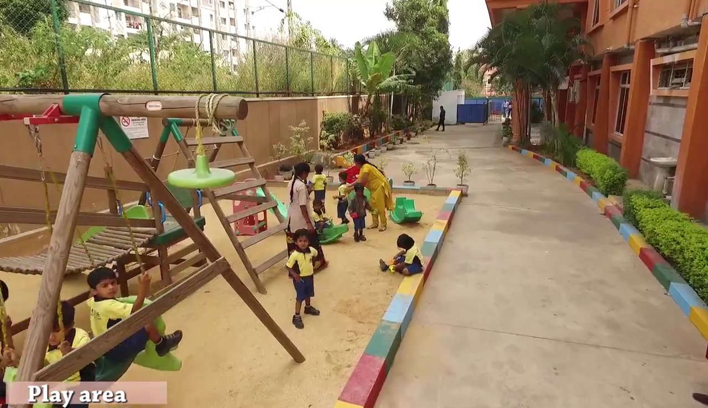

Student Life is Golden Life
 Student life is the happiest period in the life of a person. It is a life, free from all anxieties of the tough world. The mind of the student is full of noble ideas and his eyes are full of dreams. Student life is the most crucial period in the life of a person. The most important things in students life are discipline and punctuality without discipline students are like a bird without wings. Punctuality is the exact time to again knowledge. It is said that “student life is golden life,” because student life is the most important part of human life. It is the period of pure joy and happiness, because the mind of a student is free from cares and worries of a grown-up life. In this period, the character of man is built. So, it is called the formative period of human life. Every student should try his best to make the best use of his student life. The primary duty of a student is to learn and to acquire knowledge. He must do all his work at the right moment and maintain punctuality and discipline. He must remember that if a student becomes successful in his student career and his character is built on a sound basic, he will be able to shine in any sphere of life and serve his society and countries. A student should spend most of his time of this golden period in reading and learning. A good student never waste his time fixed for reading uselessly. But he must not be a book-worm being always engaged in his studies. He should also be careful about his health and spend some time daily in some sports and games. He should try to develop his body and mind at the same time. As a student he must try to develop his intellect. He should also try to acquire some good qualities like obedience, dutifulness, respect on elders and love and sympathy for fellow man in the society. The duty of a student is to obey his parents and teachers and respect the elders of the society. Students are the future hope of country. So every student should try to be the best citizen in all respects, so that he may serve his country as far as he can.
MORAL VALUES
Moral Values are the worthy ideals or principles that one follows to distinguish the right from the wrong. These ideals or virtues are considered worthy in building up the character of an individual. Moral Value refers to the good virtues such as honesty, integrity, truthfulness, compassion, helpfulness, love, respectfulness, hard-work, etc. Students are the future of India. The future of our country depends upon the moral values imparted to them during their student life. Moral lessons should be properly implemented among students in school and colleges. Children have an immense power of observation and their feelings are deep-rooted. They always observe their parents at home and their teachers in school. The method of teaching moral values to students is universal. It is the most important duty of the teachers. If a child misbehaves or tells lies, people blame the parents and teachers. Children resort to lie for their personal gains. They are really clever and try to get what they want by any means. They will steal and say that they have not. To teach them that stealing or telling lie is bad will be lost labor. It is an unrealistic approach. Thus examples of honesty and truthfulness in school and colleges are more effective than precepts or moral preaching. Students are very sensitive. They fast copy their teachers. The teachers should always behave properly and set an example. The students look at them as their ideal. Even some students of cultured and refined families lose moral values if the school environment is not proper. If a child observes his teachers to be truthful and honest, he shall also imbibe some of their virtues. In schools the textbooks ought to be based on symbolic stories. Mere platform lecture by teachers on the values of truth and honesty would bear no fruit. These days the government plans the texts of the children on these principles. In History, characters of great heroes, social reformers and prophets of truth are painted through colourful stories. These directly influence the personality of a child. They readily condemn the evil doers and the liars. They follow such allegories or parables as facts and believe them readily. Like a tender seedling that grows if it finds good soil, the minds of student get a solid base. Teachers are the source of inspiration for students. The relationship between student and teacher is very strong. The moral education can be taught at educational institutions. Our curriculum may include the study of life biographies of great personalities who followed the right path in life. The process of learning for a child is not magical. It is important that the student has sound base of strong moral values. It calls for much caution and observation from school and college authorities.